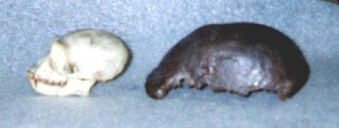

Was Java Man a gibbon?
In a word: No. Gibbon skulls have an average cranial capacity of about 100 cc. The Java Man skullcap was about 940 cc, considerably larger than even the largest gorilla skulls, which are over 700 cc. Such rough similarity of shape as exists between gibbons and Java Man is common to many apes and hominids. The Java Man skull closely resembles other Homo erectus skulls, and there is no reason not to place it in that species.
The following photo is a comparison of a gibbon skull, on the left, with a cast of the Java Man skullcap (made with the help of the staff at the American Museum of Natural History).

The next question is:
Did Eugene Dubois claim that Java Man was a gibbon?
Many creationists (and some evolutionists) state that Eugene Dubois decided in the 1930's that the Java Man skullcap was merely that of a large gibbon [1]. Not usually stated, but implied, is that he had abandoned his claims for it as a human ancestor and decided that it had nothing to do with human evolution. Here is what Dubois actually said, in papers published in 1935 and 1937:
"Pithecanthropus [Java Man] was not a man, but a gigantic genus allied to the gibbons, however superior to the gibbons on account of its exceedingly large brain volume and distinguished at the same time by its faculty of assuming an erect attitude and gait [2]. It had the double cephalization [ratio of brain size to body size] of the anthropoid apes in general and half that of man."
"It was the surprising volume of the brain - which is very much too large for an anthropoid ape, and which is small compared with the average, though not smaller than the smallest human brain - that led to the now almost general view that the "Ape Man" of Trinil, Java was really a primitive Man. Morphologically, however, the calvaria [skullcap] closely resembles that of anthropoid apes, especially the gibbon."
"... I still believe, now more firmly than ever, that the Pithecanthropus of Trinil is the real 'missing link'."
"E. Dubois: On the gibbon-like appearance of Pithecanthropus erectus. While possessing many gibbon-like characteristics, P. erectus fills the previously vacant place between the Anthropomorphae and man as regards cephalic coefficient. (Amsterdam Royal Acad., Proc 38, No 6, June 1935)". (Reported in Nature, 136:234, Aug 10 1935)
(The first two paragraphs are quoted by Trinkaus and Shipman, the first and third are quoted by Gould)
Trinkaus and Shipman's comment on this is:
"That Dubois ever claimed his fossils to be a giant gibbon is denied by some authorities, but his words here are unambiguous."
They must be somewhat ambiguous, because Gould's opinion is diametrically opposed:
"In other words, Dubois never said that Pithecanthropus was a gibbon (and therefore the lumbering, almost comical dead end of the legend); rather, he reconstructed Java Man with the proportions of a gibbon in order to inflate the body weight and transform his beloved creature into a direct human ancestor - its highest possible status - under his curious theory of evolution." [3]
The phrases "closely resembles ... the gibbon" and "a gigantic genus allied to the gibbons", are vague. Dubois seems to have thought that Java Man was most similar to, and/or most closely related to, gibbons. (This assessment is rejected by all modern scientists.) Whether that is the same thing as calling it a giant gibbon is debatable, but I would side with Gould here: saying that Java Man was allied to the gibbons does not seem to be the same thing as saying that it was a gibbon.
A later book by Shipman contains further evidence for this viewpoint, in a quote from a 1938 article by Dubois:
I never imagined Pithecanthropus as a 'giant Hylobates' [gibbon], only as a giant descendant from a 'generalized' form, which had inherited from its ancestor, the 'gibbonlike appearance', but had ... doubled [its] cephalization ... (Dubois 1938, quoted in Shipman 2001)
What is indisputable is that Dubois was not saying that Pithecanthropus had nothing to do with human evolution, as creationists usually imply. Dubois always remained firmly convinced that Java Man was a human ancestor.
Nor did Dubois decide that the skullcap and human femur found about 45 ft away were unrelated; he always insisted that they belonged to the same creature. He was probably wrong in this, but the error is not of great significance: Java Man was undoubtedly bipedal. This is shown by the Homo erectus skeleton WT 15000, discovered in Kenya in 1984. Its skullcap is very similar to that of Java Man, but its femur and the rest of its skeleton is, with only minor differences, identical to that of modern humans.
Footnotes
1. Answers in Genesis has now abandoned the claim that Dubois dismissed Java Man as a gibbon, and now lists it in their Arguments we think creationists should NOT use web page. Return to text
2. As it turned out, Dubois was correct in saying that Pithecanthropus was bipedal, even though the femur that he used as evidence of bipedality is no longer thought to belong to the same creature as the skull cap. Return to text
3. Dubois' theory was that brain evolution advanced in leaps, in which the brain effectively doubled in complexity from a previous stage. In this scheme, humans had 4 times the "cephalization" of apes, and Pithecanthropus, with its "double cephalization", nicely filled the gap between them. Return to text
References
Gould S.J. (1993): Men of the thirty-third division. In Eight little piggies. (pp. 124-37). New York: W.W.Norton. (an essay about Eugene Dubois' theories on Java Man)
Shipman P. (2001): The man who found the missing link: the extraordinary life of Eugene Dubois. New York: Simon & Schuster.
Theunissen B. (1989): Eugene Dubois and the ape-man from Java. Dordrecht,The Netherlands: Kluwer Academic Publishers.
Trinkaus E. and Shipman P. (1992): The Neandertals: changing the image of mankind. New York: Alfred E. Knopf.
Creationist arguments about Java Man
This page is part of the Fossil Hominids FAQ at the talk.origins Archive.
Home Page |
Species |
Fossils |
Creationism |
Reading |
References
Illustrations |
What's New |
Feedback |
Search |
Links |
Fiction
http://www.talkorigins.org/faqs/homs/gibbon.html, 04/30/2003
Copyright © Jim Foley
|| Email me